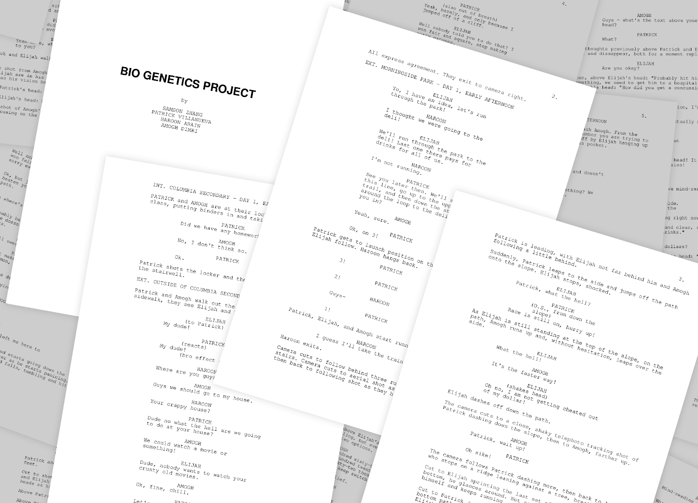
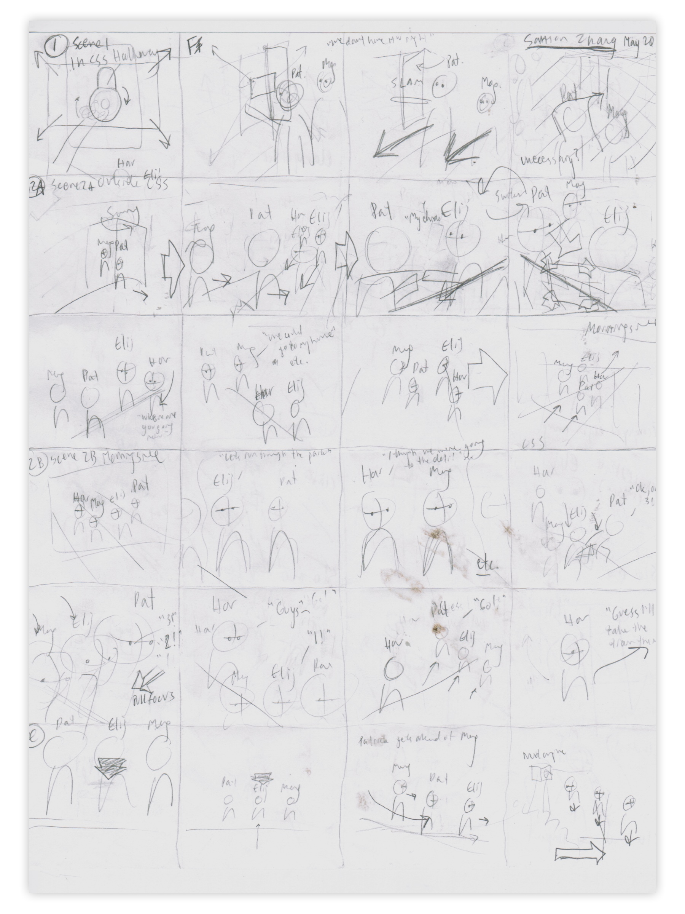
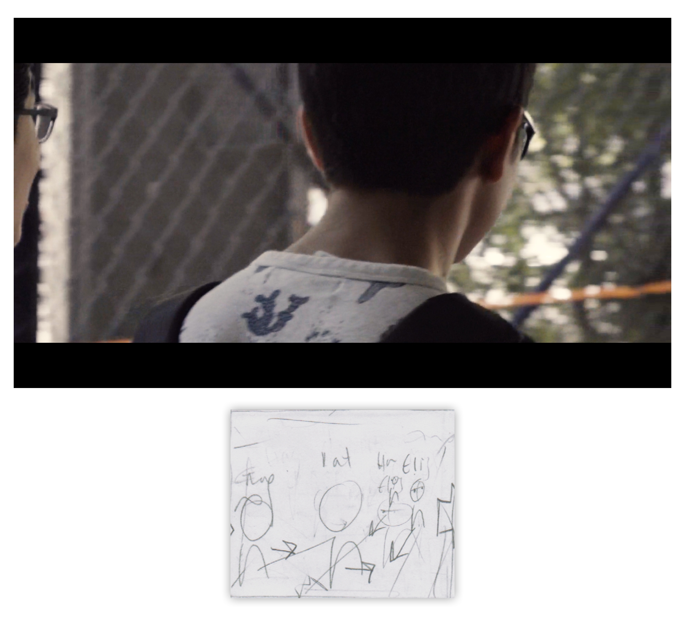
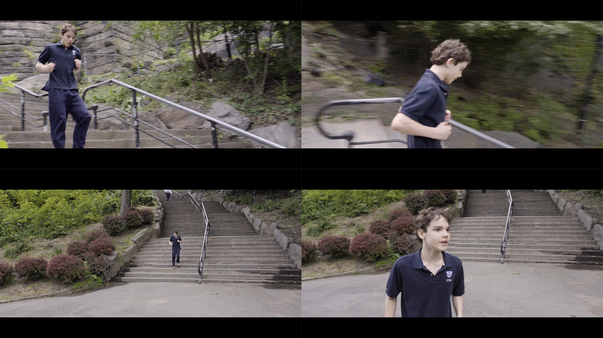
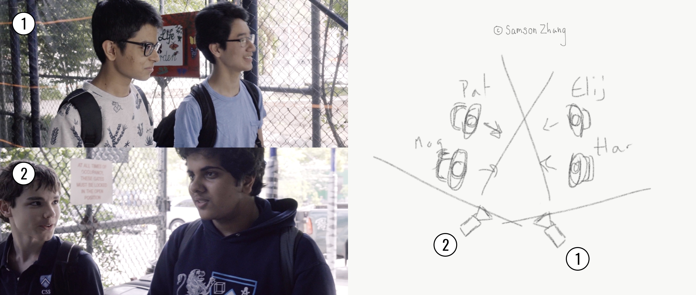
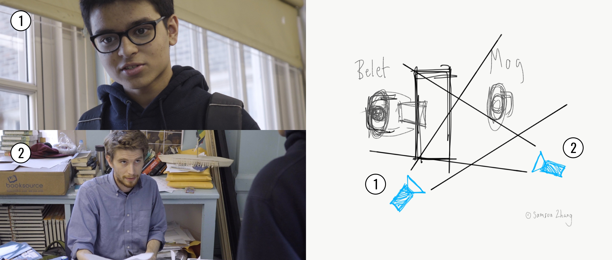
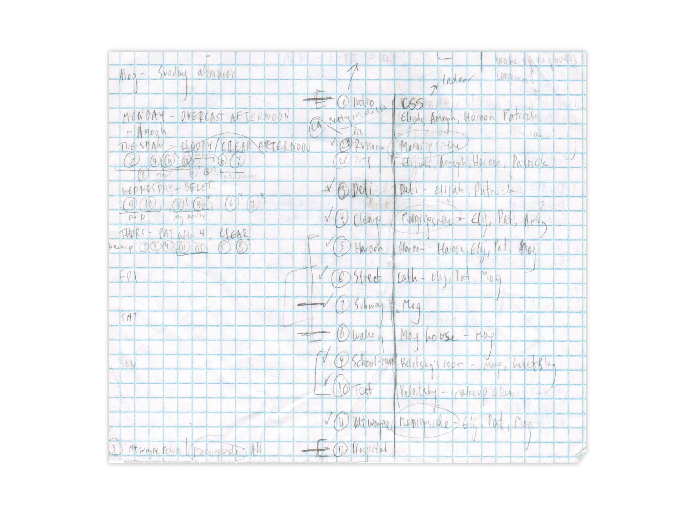
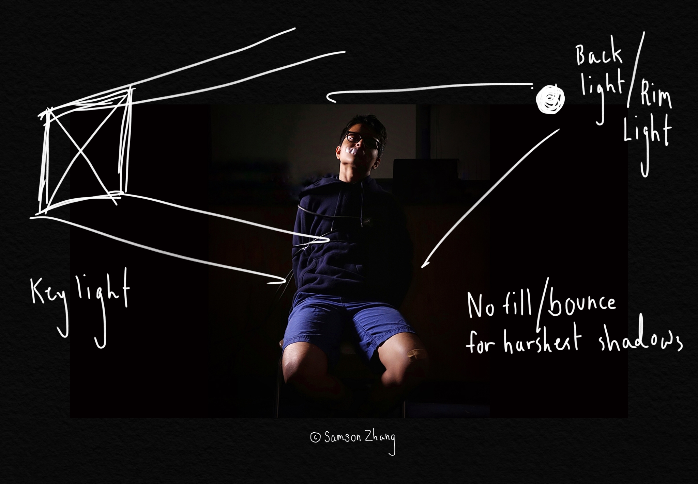

Form: Narrative Short Film Genre: Action/Sci-Fi Roles: Director, Cinematographer, Screenwriter, Editor, Colorist, Sound Designer, VFX Artist, Film Composer
Originally assigned as a school project, the 24 minute short Fallen was the second narrative film I have made. With this film, I was able to explore more with story structure, lighting, special effects, and sound design, things that I hadn’t had many opportunities to explore before. The whole project was color graded, cut, and composited in Adobe Premiere Pro and After Effects CC, and shot in SLog-2 in 1080P on a Sony RX10 II with an f/2.8 24-200mm superzoom lens.
Narrative filmmaking has been something I’ve been passionate about for a while; however, the seemingly massive manpower required to pull off the creation of a short film stopped me from ever embarking on any major narrative film projects.
Through making review videos on YouTube, I learned cinematography, lighting, editing, and color grading skills; by watching YouTube channels like DSLRGuide, D4Darious, Film Riot, Cinematography Database, and others, I learned about story structure and what was involved behind the scenes of actual short films.
What I kept seeing was that there were tons of things that a director/producer of a short film needs to plan - scheduling, setup/breakdown, casting, post-production, and seemingly a million other things - and that all these things could and would go wrong on a film set, requiring extensive pre-production planning as well as relentless production and post-production improvisation and re-planning.
I learned this for myself when I got the chance to make my first narrative short film when the final project for my biology class’s human body unit was to make a short film about diabetes. A basic plot with major plot points was given to us by my professor, and we had to make the rest.
For that project, all production was crammed into the afternoons of two days and took maybe ten hours. Almost all of it was improv or the script for a scene was written from blank to final minutes before it was filmed; we filmed one scene after another based on location and actor convenience. I tried to use basic coverage techniques as much as possible, just trying not to break any rules and representing conversations as cohesively as possible; much of the camera work ended up being completely unplanned and made up on the spot, and lighting was all practical.
Story Structure
Coming up with ideas and writing plots have always been some of my weak points. In the past, I have looked towards short stories or existing plots for inspiration.
The prompt/requirements for the project simply stated that we needed a genetics-related element to our project. What our group took this to mean was that there needs to be something that causes a genetic mutation that causes some sort of super power, and then off of that build a story arc.
For a week, we were stuck at this step and came up with a bunch of insane joke ideas that would be impossible to film.
My idea for Fallen came when a friend and I were walking home along the high path of Morningside Park one day. In the middle of the park, the road splits into a high path and a low path; between them are a series of rock faces and slopes that I frequently climb.
From the high path, there are a bunch of steep trailheads that lead into the slopes. There was one in particular that I knew well, that led to a steep, woody slope. I thought, "what if somebody jumped off of this cliff and something something genetics superpower?"
To lead up to this, there would be a running race through the park; to fulfill the project requirements of having to explain certain concepts, after acquiring his powers, the protagonist would go to a med school intern in hopes that he can explain it in fear that proper authorities would lock him up in a lab for research.
In order to maximize our resources and make the most believable and engaging film possible, I wrote the story around the people and locations that we had access to. For the most part, cast members played characters very similar to themselves, allowing them to focus more on performance and less on imagining their character. Furthermore, Morningside and my school were both locations that I knew well, allowing me to plan out shots easily, and as they mostly represented what they actually were, there was a minimal amount of set design work that we had to do to create a believable scene.
After further developments, we had come up with a protagonist, antagonist, and a basic plot.
The Protagonist of Fallen is Amogh, a high school student who just wants good grades. After acquiring mind-reading powers, he at first uses them to achieve his goals, cheating on tests and in class for good grades. However, after the powers overwhelm him, he wants them removed, and finds out that he does best without the aid of his powers.
The Antagonist of Fallen is Haroon, a high school student in a medical internship who is somewhat narrow-minded but wants wealth and fame in his career and life. At first, his character develops as lazy and nonchalant, but then puts full effort into researching Amogh's mind reading powers (and nothing else). At first, this is to help him, but then he turns manipulative and lies to Amogh for his own experiments. At the end, his glorification of his own manipulative deeds leads to Amogh outsmarting him and calling for help, leading to Haroon's fall.
In addition to these character arcs, I tried to write the plot according to the Hero's Journey story structure as well as using the idea of symmetry in story circles to work out pacing and plot points.
The final script was written in a program called Trelby, and ended up being more than 35 pages long. Even then, many changes and improvisations were made between the script and the final film, including added scenes and completely changed dialogue.

In retrospect, neither the character nor story arcs were perfect, and they definitely could have been paced and written better. I was especially dissatisfied with the resolution of conflict between Amogh and Haroon, with it ending in a weak stalement rather than anything strong, but given the amount of time we had to figure out our plot and all the changes we had to make I felt our plot turned into a relatively structured and decently paced 24-minute film.
Composition

Above: All the storyboards I had drawn up for the project, covering only the first few scenes. Featuring marks from being tossed around during production.
The shots of Fallen were a combination of meticulously planned and storyboarded shots and shots completely made up on the spot.
Above are the two shots that start the film. Neither of these shots were planned in pre-production the way that they ended up in the final cut, but they ended up being my favorite shots of the film.
The first shot is an establishing shot as well as a title shot. The camera starts at street level and pans up the school building where the next scene takes place. The title is seen projected against the building. (See the Effects section of this write-up for how I did this.) This shot was filmed after production had ended, and even after the first rough cut of the film was edited and published. Initially, the film started with a cold open on the second shot and the first scene of the test being handed back, but after editing I realized that an establishing shot was missing.
The second shot is a beautiful long shot of the ELA teacher handing a vocab quiz back to Amogh. This scene was completely improv'd, with our script ending up being thrown out in favor of lines made up on the spot by my amazing ELA teacher Prof. Beletsky. The camera work, therefore, was also made up on the scene after just a few takes; it ended up becoming a beautiful long backwards tracking shot that established the protagonist and his motivation throughout the film.
Other scenes were much more methodical and planned out, such as the running sequence. I wanted the running sequence to be fast and tight, so I had the whole sequence storyboarded out.

However, I ended up cutting as well as adding a lot of shots for better pacing during production as well as post-production. While many shots from the final version of this sequence can be traced back to my storyboards (see above pictures), some of my favorite shots in terms of camera work were improvised on the spot.

The above shot was never completely planned; I knew I needed a transition from the upper path to the lower path, but I didn't finalize the shot until Elijah and I were walking down the stairs and I thought of how epic it would be to get a shot going down them. This basically completely unplanned shot ended up being one of my favorites of the film.


Most of the shots and sequences in Fallen were shot using simple triangular coverage techniques. In the first example, Amogh and Patrick are always camera right and Elijah and Haroon are always camera left. This way, when cut between, they feel like they make up one scene cohesively.
Similarly, in the second example above, Amogh is always camera right and Beletsky is always camera left. The actors reference each other in the same spatial points between shots, forming a cohesive sequence and conversation.
By following the 180 degree rule and making sure the camera stays on one side of the line, we avoid confusion and establish a sense of orientation in the scene.
Lighting
Due to equipment, time, manpower, etc. restraints, the majority of scenes were simply lit using natural or practical lighting as best as we could. Shooting days were scheduled based on weather, and luckily most of the days of our shooting week were sunny.

However, there was one scene in which we used controlled lighting with proper studio lights borrowed my school's broadcast club.

Two lights were used in this scene: a key light and a back light. The key light creates most of the light that illuminates the side of Amogh's face and body, and the back light produces a nice rim/edge light effect.
A fill light or bounce was not used to create the harshest shadows possible. (Also because we didn't have a third light or bounce on set, luckily it worked out.)
I was happy with the final effect, which really helped to produce the eerie and intense atmosphere of the scene. Eventually, it became the base for the cover of the film.